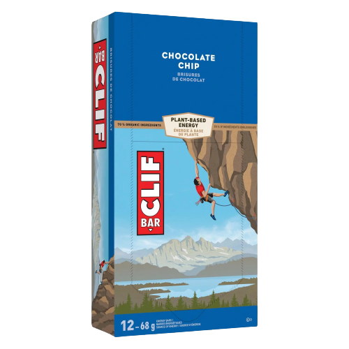
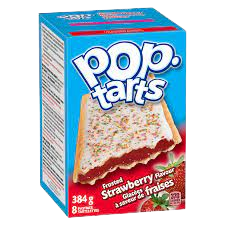
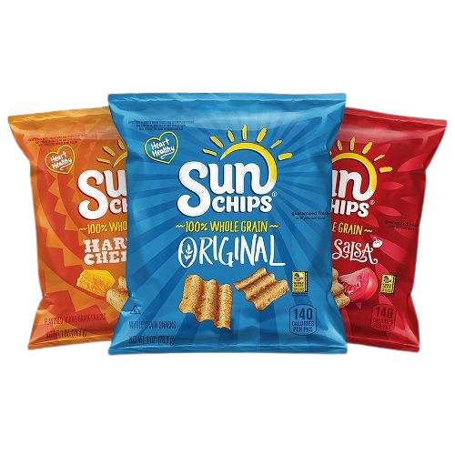
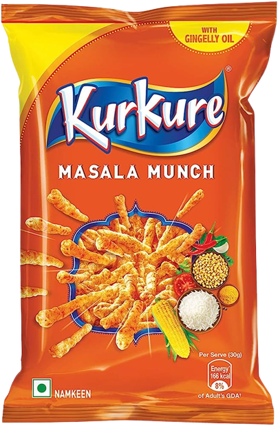
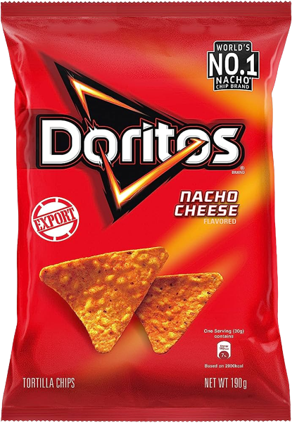
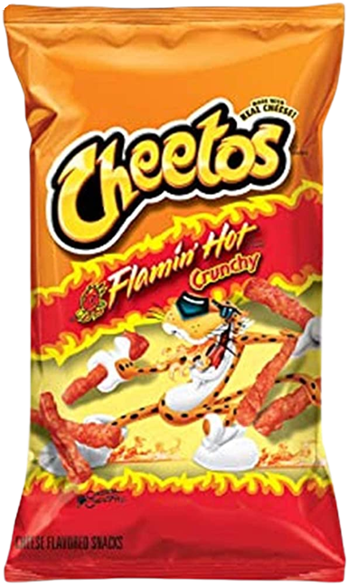
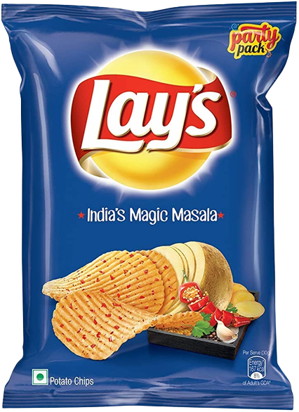
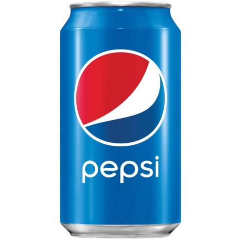
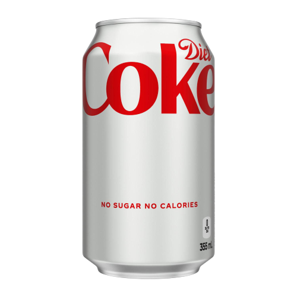

Sprite is a highly popular carbonated beverage that has gained worldwide recognition for its refreshing lemon-lime flavor. With its crisp and clean taste, Sprite is often enjoyed as a thirst-quenching soda. The clear and fizzy appearance adds to its appeal, making it a visually appealing choice for consumers. As one of the leading soft drink brands, Sprite has successfully established itself as a go-to option for those seeking a refreshing and uplifting beverage.
Cliff bars

Clif Bars are highly regarded energy bars known for their nutritious qualities and delicious taste. Made with organic ingredients, these bars offer a convenient and portable source of sustenance. They are particularly favored by individuals leading active lifestyles, including athletes and outdoor enthusiasts. Clif Bars come in a variety of flavors, catering to different preferences. These bars provide a balanced combination of carbohydrates, proteins, and fibers, making them an ideal snack for refueling and sustaining energy levels during physical activities. Whether you're hiking, biking, or simply in need of a quick and wholesome snack, Clif Bars have become a trusted choice for those seeking nourishment on the go.
Pop-tarts

Pop-Tarts are iconic toaster pastries that have captured the hearts of breakfast lovers and snack enthusiasts alike. These delicious treats offer a quick and convenient meal option, ideal for busy mornings or as an anytime indulgence. Pop-Tarts come in an array of mouthwatering flavors, ranging from classic favorites like strawberry and blueberry to creative combinations like s'mores and cookies and cream. Best enjoyed toasted, these pastries feature a flaky crust with a flavorful filling inside. With their wide popularity, Pop-Tarts have become a staple in many households, loved by both children and adults seeking a delightful and satisfying treat.
Sun Chips

Sun Chips are renowned for their unique and distinctive characteristics that set them apart from other snack chips. Made with a blend of whole grains, these chips offer a healthier alternative to traditional potato chips. The signature wavy shape and crispy texture of Sun Chips enhance the snacking experience, creating a delightful crunch with every bite. Available in a variety of flavors, such as Harvest Cheddar, Garden Salsa, and French Onion, Sun Chips cater to different taste preferences. With their focus on using quality ingredients and providing a wholesome snacking option, Sun Chips have gained a loyal following among health-conscious individuals who appreciate the combination of taste and nutrition.
Kurkure

Kurkure is a beloved Indian snack renowned for its crispy and flavorful qualities. Made from cornmeal and an assortment of spices, Kurkure offers a unique taste experience that captures the essence of Indian cuisine. With its distinctive crunch and range of exciting flavors, including Masala Munch, Solid Masti, and Naughty Tomato, Kurkure has become a go-to snack for countless people. Often enjoyed during tea-time gatherings or as a quick snack on the go, Kurkure has successfully carved a niche in the snacking industry, providing a tantalizing blend of textures and flavors that are hard to resist.
Doritos

Doritos are iconic triangular tortilla chips that have become synonymous with bold and zesty flavors. Known for their satisfying crunch and intense taste, Doritos are a go-to choice for those seeking a snack with a punch. Whether it's Cool Ranch, Nacho Cheese, or Spicy Sweet Chili, each flavor delivers a distinct and memorable snacking experience. Doritos are often accompanied by salsa, guacamole, or cheese dip, enhancing their flavor profile and making them a popular choice for social gatherings and parties. With their recognizable shape, vibrant packaging, and irresistible taste, Doritos have cemented their position as a beloved snack brand loved by millions worldwide.
Cheetos

Cheetos are an iconic cheese-flavored snack renowned for their addictive crunchiness and distinct cheesy taste. Made with a special blend of cheese powder, Cheetos offer a finger-licking snacking experience that keeps fans coming back for more. Available in various shapes and sizes, from the classic Cheetos Crunchy to the playful Cheetos Puffs, these snacks provide a satisfying texture and burst of flavor. Whether enjoyed as a standalone snack or combined with other ingredients to create unique recipes, Cheetos have become a staple for snacking enthusiasts of all ages. The bold and cheesy nature of Cheetos makes them a true delight for those seeking a flavorful and fun snacking option.
Lays

Lays is a globally recognized snack brand known for its thin and crispy potato chips. With a wide range of flavors to choose from, including Classic, Sour Cream & Onion, Barbecue, and Salt & Vinegar, Lays has something to satisfy every palate. The chips' light and airy texture, combined with their distinct taste, has made Lays a beloved choice for snacking enjoyment. Whether consumed on their own or paired with sandwiches, burgers, or dips, Lays chips provide a satisfying and flavorful snacking experience. With its iconic packaging and consistent quality, Lays has become a household name synonymous with indulgent snacking.
Pepsi

Pepsi is a renowned carbonated soft drink that has carved a place for itself in the beverage industry. With its distinct cola flavor, Pepsi offers a delightful combination of sweetness and fizziness. Known for its refreshing and invigorating qualities, Pepsi has become a popular choice for those seeking a cola beverage. The brand's marketing campaigns and iconic blue logo have contributed to its widespread recognition and appeal. As a significant competitor to Coca-Cola, Pepsi has solidified its position as a leading player in the soft drink market, catering to the preferences of consumers worldwide.
Diet Coke

Diet Coke is a sugar-free carbonated beverage that provides a low-calorie alternative to regular soda. Retaining the classic cola flavor, Diet Coke offers a guilt-free option for those looking to reduce their sugar and calorie intake. The beverage has gained popularity among individuals who desire a lighter soda option without compromising on taste. Diet Coke appeals to health-conscious consumers, offering a refreshing and satisfying experience while aligning with their dietary goals. With its recognizable silver packaging and widespread availability, Diet Coke has become a go-to choice for those seeking a flavorful and calorie-conscious beverage.